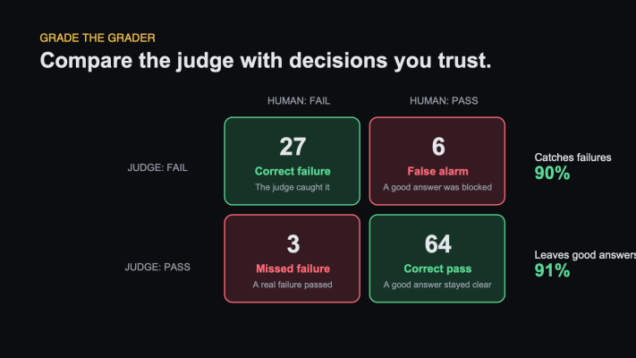

Who Evaluates the Evaluator?
Your LLM judge says the system passes 94% of the time.
Should you trust it?
Not until you know how often the judge itself is wrong.
An unchecked judge is just another model producing an opinion. A polished dashboard does not make that opinion reliable.
The judge needs an eval too.
Create a human-labelled set
Ask a trusted domain expert to label a representative set of outputs as pass or fail.
Around 100 examples can be enough for a useful first check.
The set should include:
- clear passes
- clear failures
- borderline cases
- common production patterns
- difficult edge cases
Do not use all the examples while writing the judge prompt.
Use some as prompt examples, some for tuning, and keep the final group untouched for validation.
That held-out group tells you whether the judge learned the rule or merely adapted to familiar examples.
Compare the judge with the human
For every held-out example, compare the two decisions.
You will get four outcomes:
- The judge and human both say fail: correct failure
- The judge says fail and the human says pass: false alarm
- The judge says pass and the human says fail: missed failure
- The judge and human both say pass: correct pass
Suppose the results are:
- 27 correct failures
- 6 false alarms
- 3 missed failures
- 64 correct passes
The judge catches 27 of 30 real failures, or 90%.
It also leaves 64 of 70 good answers alone, or about 91%.

Both numbers matter.
Accuracy alone can mislead you
Imagine that only 5% of production responses contain a serious failure.
A judge that always says "pass" will be 95% accurate.
It will also catch zero failures.
That is why one accuracy score is not enough.
Track at least:
- How many real failures the judge catches
- How many good answers it incorrectly blocks
The right balance depends on the risk.
For a harmless formatting issue, a missed failure may be acceptable. For a medical or financial claim, the cost can be much higher.
Watch for judge bias
LLM judges have known tendencies.
They may prefer:
- longer answers
- the first option in a pair
- language that resembles their own model family
- confident wording
You can reduce some of these effects.
For pairwise comparison, swap the order and run the judge again. If the verdict flips, the result is not stable enough.
Keep judge prompts focused. Include real examples. Revalidate whenever the judge model or prompt changes.
Read disagreements
The most useful examples are often where the human and judge disagree.
Read them one by one.
You may discover:
- the judge rule is unclear
- the human label is wrong
- the case is genuinely ambiguous
- the policy itself needs clarification
Calibration is not only about improving the judge. It often exposes gaps in the product requirements.
Three things to remember
- Every LLM judge needs a human-labelled validation set.
- Track missed failures and false alarms separately.
- Recheck the judge whenever its model, prompt, or task changes.
Do not ask whether the judge sounds reasonable.
Ask how it performs against decisions you already trust.
Originally published on LinkedIn.